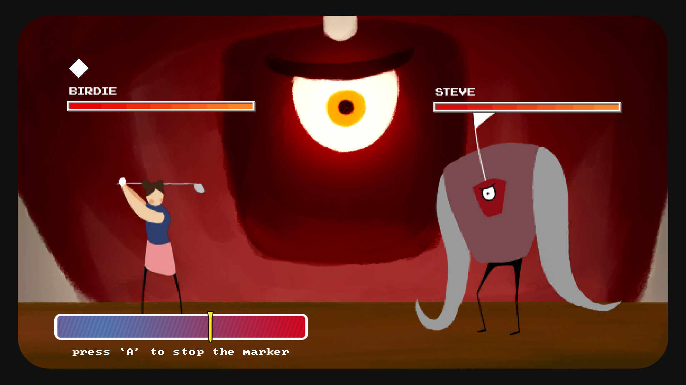

This was the first game jam we made for a Ludum Dare jam in 2D. I worked on the art elements and we collaborated on the game design. This small game is meant to be like an RPG combat system mixed with putt-putt or mini golf. The player has to time their attack and stop the meter at the very end of the bar, if they are successful they enter a mini-golf mini-game and the better their stroke to get to the hole, the more powerful their attack is; essentially a critical hit mini-golf mini-game mini-game.
I designed the characters in Photoshop and animated them in TVPAINT, while my Team mate David drew the background and story elements that we used for the title sequence. A lot of the carry work for this jam was our programmer Sanjeev. He made all the game mechanics work seamlessly in the short amount of time we had.

Golf Slayer
Published on 21/04/21